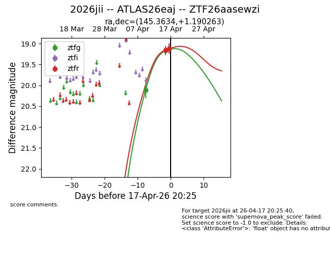
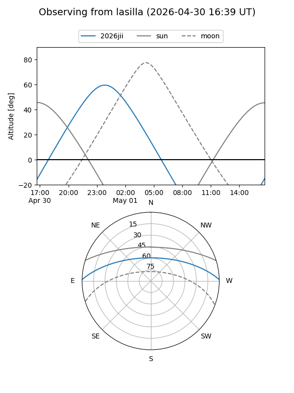
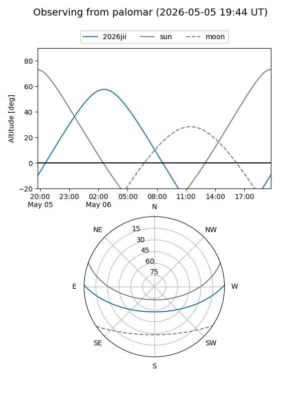
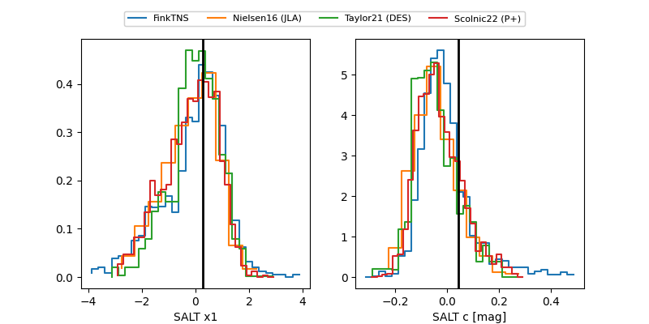

2026jii
Target 2026jii at 2026-04-17 20:31
Aliases and brokers:
FINK: link
Lasair: link
ALeRCE: link
TNS: link
YSE: link
alt names
ZTF26aasewzi (ztf,fink_ztf)
2026jii (tns,yse)
ATLAS26eaj (atlas)
Coordinates:
equatorial (ra, dec) = 145.3634,+1.19026
equatorial (HMS+DMS) = 09:41:27.23,+01:11:24.95
galactic (l, b) = (234.3772,+37.63686)
Flags:
Photometry:
last ztfg=19.17, ztfr=19.12
2 ztfg, 2 ztfr detections
Lightcurve

Visibility


Additional plots
